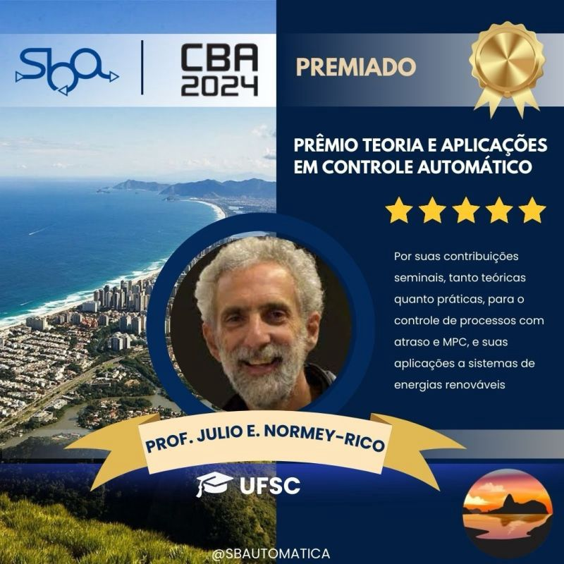

Coordenador do INCT CAPE é reconhecido pela Sociedade Brasileira de Automática
O professor Julio Elias Normey-Rico, coordenador do INCT CAPE, foi agraciado com um prêmio da Sociedade Brasileira de Automática (SBA) em reconhecimento às suas notáveis contribuições teóricas e práticas na área de controle automático. A premiação, instituída pela SBA, busca destacar profissionais que se distinguem por suas contribuições excepcionais à engenharia, ciência ou tecnologia em sistemas de controle e automação, bem como por serviços de longo prazo prestados à comunidade da SBA.
A escolha do laureado é baseada principalmente no mérito técnico e na relevância das contribuições realizadas para a área de controle e automação no Brasil. Os principais critérios analisados incluem:
- A natureza inovadora e seminal das contribuições.
- Realizações singulares que marcaram a área.
- Impacto prático e abrangência das soluções propostas.
- Profundidade e originalidade das contribuições.
- Reconhecimento e precedência histórica.
- Qualidade da indicação e serviços prestados à SBA.
O professor Normey-Rico receberá o prêmio durante o Congresso Brasileiro de Automática 2024, que será realizado entre os dias 15 e 18 de outubro de 2024.
